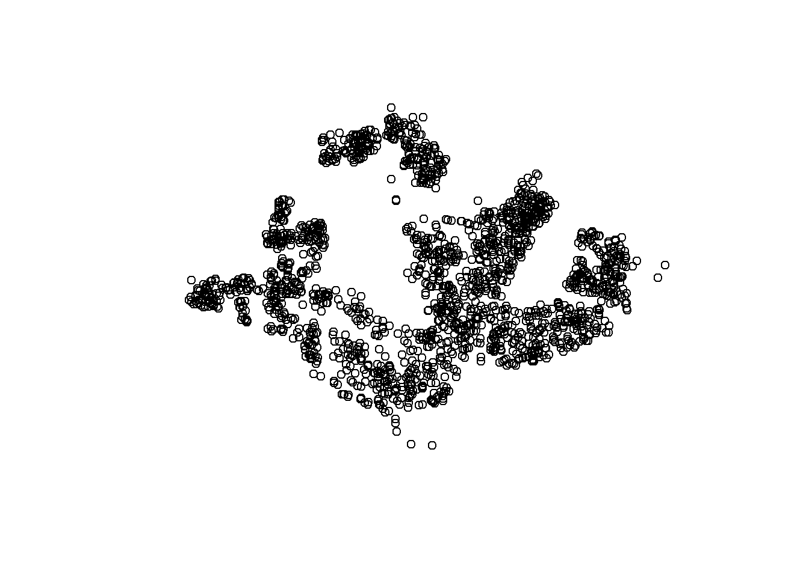
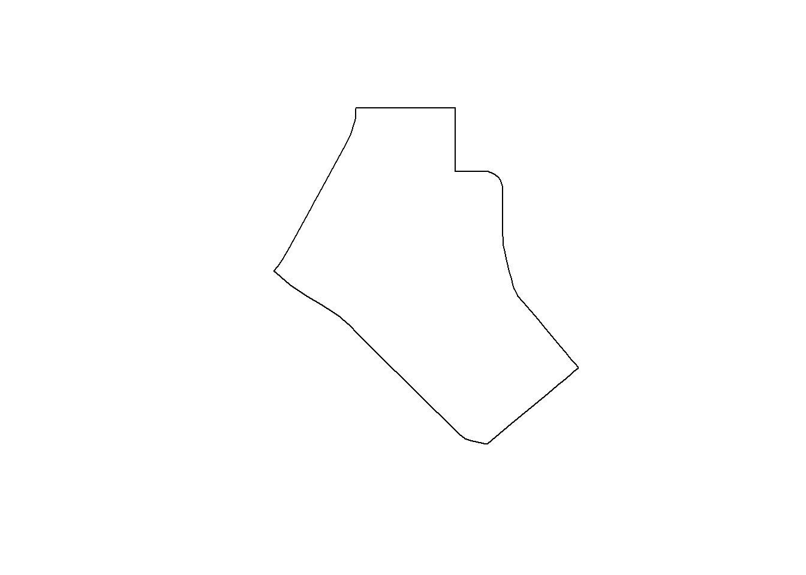

pacman::p_load(sf,tidyverse)Hands-on Exercise 01-1
Ex 1: Geospatial Data Science with R
1.3 Getting Started: Installing and Launching R Packages
The following code chunk uses the p_load() function from the pacman package to check whether the sf and tidyverse packages are installed. If they are, it loads them into the R session; if not, we could install them first via function install.packages() and then load them into R by using p_load().
1.4 Importing the Data
The geospatial datasets include shapefiles and KML file. (The reason of selecting file format). The geospatial data consist of the Master Plan 2014 Subzone Boundary (Web), Pre-Schools Location from data.gov.sg, and Cycling Path from LTA DataMall. The aspatial dataset is the Singapore Airbnb listings from Inside Airbnb.
R itself is case-sensitive, especially for object and function names. Whether file paths are case-sensitive depends on the operating system, e.g. On Windows: it is not case-sensitive.
- 1.4.1 The code below uses the st_read() function from the sf package to load the Master Plan 2014 Subzone Boundary (Web) shapefile as a polygon data frame. For shapefiles, the .shp extension does not need to be specified in the code. Both absolute and relative paths can be used, but a relative path is applied here to keep the code cleaner and shorter.
mpsz = st_read(dsn = "data/geospatial",
layer = "mp14_SUBZONE_WEB_PL")Reading layer `mp14_SUBZONE_WEB_PL' from data source
`C:\lsrgc\ISSS626-yiqiong-pan\Hands-on_Ex\Hands-on_Ex01_1\data\geospatial'
using driver `ESRI Shapefile'
Simple feature collection with 323 features and 15 fields
Geometry type: MULTIPOLYGON
Dimension: XY
Bounding box: xmin: 2667.538 ymin: 15748.72 xmax: 56396.44 ymax: 50256.33
Projected CRS: SVY21- 1.4.2 Similarly, the code below uses st_read() to import the Cycling Path shapefile as a polyline data frame.
cyclingpath = st_read(dsn = "data/geospatial",
layer = "CyclingPathGazette")Reading layer `CyclingPathGazette' from data source
`C:\lsrgc\ISSS626-yiqiong-pan\Hands-on_Ex\Hands-on_Ex01_1\data\geospatial'
using driver `ESRI Shapefile'
Simple feature collection with 4651 features and 19 fields
Geometry type: MULTILINESTRING
Dimension: XY
Bounding box: xmin: 11721.1 ymin: 27550.13 xmax: 42809.37 ymax: 49702.59
Projected CRS: SVY21- 1.4.3 The code below uses st_read() to import the Pre-Schools Location in KML format as point feature data frame into R. When importing a KML file, the .kml extension must be included.
svy21 vs wgs84?
preschool = st_read("data/geospatial/PreSchoolsLocation.kml")Reading layer `PRESCHOOLS_LOCATION' from data source
`C:\lsrgc\ISSS626-yiqiong-pan\Hands-on_Ex\Hands-on_Ex01_1\data\geospatial\PreSchoolsLocation.kml'
using driver `KML'
Simple feature collection with 2290 features and 2 fields
Geometry type: POINT
Dimension: XYZ
Bounding box: xmin: 103.6878 ymin: 1.247759 xmax: 103.9897 ymax: 1.462134
z_range: zmin: 0 zmax: 0
Geodetic CRS: WGS 841.5 Checking the Content of a Simple Feature Data Frame
Both two code chunks display the basic information about the dataset. However, it is more common to use the second approach.
mpsz$geomGeometry set for 323 features
Geometry type: MULTIPOLYGON
Dimension: XY
Bounding box: xmin: 2667.538 ymin: 15748.72 xmax: 56396.44 ymax: 50256.33
Projected CRS: SVY21
First 5 geometries:MULTIPOLYGON (((31495.56 30140.01, 31980.96 296...MULTIPOLYGON (((29092.28 30021.89, 29119.64 300...MULTIPOLYGON (((29932.33 29879.12, 29947.32 298...MULTIPOLYGON (((27131.28 30059.73, 27088.33 297...MULTIPOLYGON (((26451.03 30396.46, 26440.47 303...st_geometry(mpsz)Geometry set for 323 features
Geometry type: MULTIPOLYGON
Dimension: XY
Bounding box: xmin: 2667.538 ymin: 15748.72 xmax: 56396.44 ymax: 50256.33
Projected CRS: SVY21
First 5 geometries:MULTIPOLYGON (((31495.56 30140.01, 31980.96 296...MULTIPOLYGON (((29092.28 30021.89, 29119.64 300...MULTIPOLYGON (((29932.33 29879.12, 29947.32 298...MULTIPOLYGON (((27131.28 30059.73, 27088.33 297...MULTIPOLYGON (((26451.03 30396.46, 26440.47 303...Although it is mentioned as one of the ways to retrieve the first 5 records like the two code chunks above, but here we see seems to be ID column?
mpsz[[1]] [1] 1 2 3 4 5 6 7 8 9 10 11 12 13 14 15 16 17 18
[19] 19 20 21 22 23 24 25 26 27 28 29 30 31 32 33 34 35 36
[37] 37 38 39 40 41 42 43 44 45 46 47 48 49 50 51 52 53 54
[55] 55 56 57 58 59 60 61 62 63 64 65 66 67 68 69 70 71 72
[73] 73 74 75 76 77 78 79 80 81 82 83 84 85 86 87 88 89 90
[91] 91 92 93 94 95 96 97 98 99 100 101 102 103 104 105 106 107 108
[109] 109 110 111 112 113 114 115 116 117 118 119 120 121 122 123 124 125 126
[127] 127 128 129 130 131 132 133 134 135 136 137 138 139 140 141 142 143 144
[145] 145 146 147 148 149 150 151 152 153 154 155 156 157 158 159 160 161 162
[163] 163 164 165 166 167 168 169 170 171 172 173 174 175 176 177 178 179 180
[181] 181 182 183 184 185 186 187 188 189 190 191 192 193 194 195 196 197 198
[199] 199 200 201 202 203 204 205 206 207 208 209 210 211 212 213 214 215 216
[217] 217 218 219 220 221 222 223 224 225 226 227 228 229 230 231 232 233 234
[235] 235 236 237 238 239 240 241 242 243 244 245 246 247 248 249 250 251 252
[253] 253 254 255 256 257 258 259 260 261 262 263 264 265 266 267 268 269 270
[271] 271 272 273 274 275 276 277 278 279 280 281 282 283 284 285 286 287 288
[289] 289 290 291 292 293 294 295 296 297 298 299 300 301 302 303 304 305 306
[307] 307 308 309 310 311 312 313 314 315 316 317 318 319 320 321 322 323Furthermore, the code below uses glimpse() of dplyr to display more detailed attribute information in the data frame.
glimpse(mpsz)Rows: 323
Columns: 16
$ OBJECTID <int> 1, 2, 3, 4, 5, 6, 7, 8, 9, 10, 11, 12, 13, 14, 15, 16, 17, …
$ SUBZONE_NO <int> 1, 1, 3, 8, 3, 7, 9, 2, 13, 7, 12, 6, 1, 5, 1, 1, 3, 2, 2, …
$ SUBZONE_N <chr> "MARINA SOUTH", "PEARL'S HILL", "BOAT QUAY", "HENDERSON HIL…
$ SUBZONE_C <chr> "MSSZ01", "OTSZ01", "SRSZ03", "BMSZ08", "BMSZ03", "BMSZ07",…
$ CA_IND <chr> "Y", "Y", "Y", "N", "N", "N", "N", "Y", "N", "N", "N", "N",…
$ PLN_AREA_N <chr> "MARINA SOUTH", "OUTRAM", "SINGAPORE RIVER", "BUKIT MERAH",…
$ PLN_AREA_C <chr> "MS", "OT", "SR", "BM", "BM", "BM", "BM", "SR", "QT", "QT",…
$ REGION_N <chr> "CENTRAL REGION", "CENTRAL REGION", "CENTRAL REGION", "CENT…
$ REGION_C <chr> "CR", "CR", "CR", "CR", "CR", "CR", "CR", "CR", "CR", "CR",…
$ INC_CRC <chr> "5ED7EB253F99252E", "8C7149B9EB32EEFC", "C35FEFF02B13E0E5",…
$ FMEL_UPD_D <date> 2014-12-05, 2014-12-05, 2014-12-05, 2014-12-05, 2014-12-05…
$ X_ADDR <dbl> 31595.84, 28679.06, 29654.96, 26782.83, 26201.96, 25358.82,…
$ Y_ADDR <dbl> 29220.19, 29782.05, 29974.66, 29933.77, 30005.70, 29991.38,…
$ SHAPE_Leng <dbl> 5267.381, 3506.107, 1740.926, 3313.625, 2825.594, 4428.913,…
$ SHAPE_Area <dbl> 1630379.27, 559816.25, 160807.50, 595428.89, 387429.44, 103…
$ geometry <MULTIPOLYGON [m]> MULTIPOLYGON (((31495.56 30..., MULTIPOLYGON (…Lastly, the code below uses the head() function from base R (similar to Python, where the argument n can be set manually) to display the first few rows of the data frame for a quick overview.
head(mpsz, n=5)Simple feature collection with 5 features and 15 fields
Geometry type: MULTIPOLYGON
Dimension: XY
Bounding box: xmin: 25867.68 ymin: 28369.47 xmax: 32362.39 ymax: 30435.54
Projected CRS: SVY21
OBJECTID SUBZONE_NO SUBZONE_N SUBZONE_C CA_IND PLN_AREA_N
1 1 1 MARINA SOUTH MSSZ01 Y MARINA SOUTH
2 2 1 PEARL'S HILL OTSZ01 Y OUTRAM
3 3 3 BOAT QUAY SRSZ03 Y SINGAPORE RIVER
4 4 8 HENDERSON HILL BMSZ08 N BUKIT MERAH
5 5 3 REDHILL BMSZ03 N BUKIT MERAH
PLN_AREA_C REGION_N REGION_C INC_CRC FMEL_UPD_D X_ADDR
1 MS CENTRAL REGION CR 5ED7EB253F99252E 2014-12-05 31595.84
2 OT CENTRAL REGION CR 8C7149B9EB32EEFC 2014-12-05 28679.06
3 SR CENTRAL REGION CR C35FEFF02B13E0E5 2014-12-05 29654.96
4 BM CENTRAL REGION CR 3775D82C5DDBEFBD 2014-12-05 26782.83
5 BM CENTRAL REGION CR 85D9ABEF0A40678F 2014-12-05 26201.96
Y_ADDR SHAPE_Leng SHAPE_Area geometry
1 29220.19 5267.381 1630379.3 MULTIPOLYGON (((31495.56 30...
2 29782.05 3506.107 559816.2 MULTIPOLYGON (((29092.28 30...
3 29974.66 1740.926 160807.5 MULTIPOLYGON (((29932.33 29...
4 29933.77 3313.625 595428.9 MULTIPOLYGON (((27131.28 30...
5 30005.70 2825.594 387429.4 MULTIPOLYGON (((26451.03 30...1.6 Plotting the Geo spatial Data
Visualising an sf data frame is straightforward: using the plot() of Base R function automatically generates small coloured maps of the geometries by each attribute (field), while excluding non-informative columns such as the OBJECTID.
plot(mpsz)Warning: plotting the first 9 out of 15 attributes; use max.plot = 15 to plot
all
Meanwhile, the code chunk below can be used to display the silhouette of the map:
plot(st_geometry(mpsz))We can also focus on a specific attribute by using the code chunk below:
plot(mpsz["PLN_AREA_N"])
To get a polished view of the data, we can use the tmap package, but it takes longer processing time:
#library(tmap)
#tm_shape(mpsz) +
#tm_fill("PLN_AREA_N")+
#tm_borders()
## comment out to save timeBelow we quickly plot the preschool and cyclingpath.
plot(st_geometry(preschool))
plot(st_geometry(cyclingpath))Below we can plot the cyclingpath layer on the top of the mpsz layer by using add argument.
plot(st_geometry(mpsz))
plot(st_geometry(cyclingpath),
add = TRUE, col = "Blue")When trying the code with preschool, the preschool points does not appear on the subzone map because the two layers use different CRSs (mpsz in SVY21 and preschool in WGS84), transformation of preschool into the same CRS as mpsz is required before plotting the aligned map.
plot(st_geometry(mpsz))
plot(st_geometry(preschool),
add = TRUE)1.7 Projection Transformation
st_crs(mpsz)Coordinate Reference System:
User input: SVY21
wkt:
PROJCRS["SVY21",
BASEGEOGCRS["SVY21[WGS84]",
DATUM["World Geodetic System 1984",
ELLIPSOID["WGS 84",6378137,298.257223563,
LENGTHUNIT["metre",1]],
ID["EPSG",6326]],
PRIMEM["Greenwich",0,
ANGLEUNIT["Degree",0.0174532925199433]]],
CONVERSION["unnamed",
METHOD["Transverse Mercator",
ID["EPSG",9807]],
PARAMETER["Latitude of natural origin",1.36666666666667,
ANGLEUNIT["Degree",0.0174532925199433],
ID["EPSG",8801]],
PARAMETER["Longitude of natural origin",103.833333333333,
ANGLEUNIT["Degree",0.0174532925199433],
ID["EPSG",8802]],
PARAMETER["Scale factor at natural origin",1,
SCALEUNIT["unity",1],
ID["EPSG",8805]],
PARAMETER["False easting",28001.642,
LENGTHUNIT["metre",1],
ID["EPSG",8806]],
PARAMETER["False northing",38744.572,
LENGTHUNIT["metre",1],
ID["EPSG",8807]]],
CS[Cartesian,2],
AXIS["(E)",east,
ORDER[1],
LENGTHUNIT["metre",1,
ID["EPSG",9001]]],
AXIS["(N)",north,
ORDER[2],
LENGTHUNIT["metre",1,
ID["EPSG",9001]]]]st_crs(preschool)Coordinate Reference System:
User input: WGS 84
wkt:
GEOGCRS["WGS 84",
DATUM["World Geodetic System 1984",
ELLIPSOID["WGS 84",6378137,298.257223563,
LENGTHUNIT["metre",1]]],
PRIMEM["Greenwich",0,
ANGLEUNIT["degree",0.0174532925199433]],
CS[ellipsoidal,2],
AXIS["geodetic latitude (Lat)",north,
ORDER[1],
ANGLEUNIT["degree",0.0174532925199433]],
AXIS["geodetic longitude (Lon)",east,
ORDER[2],
ANGLEUNIT["degree",0.0174532925199433]],
ID["EPSG",4326]]st_crs(cyclingpath)Coordinate Reference System:
User input: SVY21
wkt:
PROJCRS["SVY21",
BASEGEOGCRS["WGS 84",
DATUM["World Geodetic System 1984",
ELLIPSOID["WGS 84",6378137,298.257223563,
LENGTHUNIT["metre",1]],
ID["EPSG",6326]],
PRIMEM["Greenwich",0,
ANGLEUNIT["Degree",0.0174532925199433]]],
CONVERSION["unnamed",
METHOD["Transverse Mercator",
ID["EPSG",9807]],
PARAMETER["Latitude of natural origin",1.36666666666667,
ANGLEUNIT["Degree",0.0174532925199433],
ID["EPSG",8801]],
PARAMETER["Longitude of natural origin",103.833333333333,
ANGLEUNIT["Degree",0.0174532925199433],
ID["EPSG",8802]],
PARAMETER["Scale factor at natural origin",1,
SCALEUNIT["unity",1],
ID["EPSG",8805]],
PARAMETER["False easting",28001.642,
LENGTHUNIT["metre",1],
ID["EPSG",8806]],
PARAMETER["False northing",38744.572,
LENGTHUNIT["metre",1],
ID["EPSG",8807]]],
CS[Cartesian,2],
AXIS["(E)",east,
ORDER[1],
LENGTHUNIT["metre",1,
ID["EPSG",9001]]],
AXIS["(N)",north,
ORDER[2],
LENGTHUNIT["metre",1,
ID["EPSG",9001]]]]The above funtion st_crs() reveals that the layers of mpsz and cyclingpath are indeed in SVY21, but they are missing the correct EPSG code (3414). Assigning EPSG 3414 by using st_set_crs() of sf packages ensures the CRS is properly identified, as below:
mpsz <- st_set_crs(mpsz,3414)Warning: st_crs<- : replacing crs does not reproject data; use st_transform for
thatst_crs(mpsz)Coordinate Reference System:
User input: EPSG:3414
wkt:
PROJCRS["SVY21 / Singapore TM",
BASEGEOGCRS["SVY21",
DATUM["SVY21",
ELLIPSOID["WGS 84",6378137,298.257223563,
LENGTHUNIT["metre",1]]],
PRIMEM["Greenwich",0,
ANGLEUNIT["degree",0.0174532925199433]],
ID["EPSG",4757]],
CONVERSION["Singapore Transverse Mercator",
METHOD["Transverse Mercator",
ID["EPSG",9807]],
PARAMETER["Latitude of natural origin",1.36666666666667,
ANGLEUNIT["degree",0.0174532925199433],
ID["EPSG",8801]],
PARAMETER["Longitude of natural origin",103.833333333333,
ANGLEUNIT["degree",0.0174532925199433],
ID["EPSG",8802]],
PARAMETER["Scale factor at natural origin",1,
SCALEUNIT["unity",1],
ID["EPSG",8805]],
PARAMETER["False easting",28001.642,
LENGTHUNIT["metre",1],
ID["EPSG",8806]],
PARAMETER["False northing",38744.572,
LENGTHUNIT["metre",1],
ID["EPSG",8807]]],
CS[Cartesian,2],
AXIS["northing (N)",north,
ORDER[1],
LENGTHUNIT["metre",1]],
AXIS["easting (E)",east,
ORDER[2],
LENGTHUNIT["metre",1]],
USAGE[
SCOPE["Cadastre, engineering survey, topographic mapping."],
AREA["Singapore - onshore and offshore."],
BBOX[1.13,103.59,1.47,104.07]],
ID["EPSG",3414]]On the other hand, the code below using st_transform() reprojects the preschool data from the WGS84 to SVY21.
preschool <- st_transform(preschool,
crs = 3414)By display the preview of preschool sf data, we can confirm its CRS is SVY21 now.
st_geometry(preschool)Geometry set for 2290 features
Geometry type: POINT
Dimension: XYZ
Bounding box: xmin: 11810.03 ymin: 25596.33 xmax: 45404.24 ymax: 49300.88
z_range: zmin: 0 zmax: 0
Projected CRS: SVY21 / Singapore TM
First 5 geometries:POINT Z (25089.46 31299.16 0)POINT Z (27189.07 32792.54 0)POINT Z (28844.56 36773.76 0)POINT Z (24821.92 46303.16 0)POINT Z (28637.82 35038.49 0)Here we could align both data together by setting add argument TRUE.
plot(st_geometry(mpsz))
plot(st_geometry(preschool), add = TRUE)
1.8 Importing and Converting an Aspatial Data
1.8.1 The chunk below first uses read_csv() from readr to import listing.csv into R as a tibble data frame, and then applies list() from base R to preview the first 10 records, similar to glimpse() of dplyr.
listings <- read_csv("data/aspatial/listings.csv")Rows: 3659 Columns: 18
── Column specification ────────────────────────────────────────────────────────
Delimiter: ","
chr (6): name, host_name, neighbourhood_group, neighbourhood, room_type, l...
dbl (11): id, host_id, latitude, longitude, price, minimum_nights, number_o...
date (1): last_review
ℹ Use `spec()` to retrieve the full column specification for this data.
ℹ Specify the column types or set `show_col_types = FALSE` to quiet this message.list(listings)[[1]]
# A tibble: 3,659 × 18
id name host_id host_name neighbourhood_group neighbourhood latitude
<dbl> <chr> <dbl> <chr> <chr> <chr> <dbl>
1 71609 Ensuite … 367042 Belinda East Region Tampines 1.35
2 71896 B&B Roo… 367042 Belinda East Region Tampines 1.35
3 71903 Room 2-n… 367042 Belinda East Region Tampines 1.35
4 275343 10min wa… 1439258 Kay Central Region Bukit Merah 1.29
5 275344 15 mins … 1439258 Kay Central Region Bukit Merah 1.29
6 294281 5 mins w… 1521514 Elizabeth Central Region Newton 1.31
7 324945 Comforta… 1439258 Kay Central Region Bukit Merah 1.29
8 330095 Relaxing… 1439258 Kay Central Region Bukit Merah 1.29
9 344803 Budget s… 367042 Belinda East Region Tampines 1.35
10 369141 5mins fr… 1521514 Elizabeth Central Region Newton 1.31
# ℹ 3,649 more rows
# ℹ 11 more variables: longitude <dbl>, room_type <chr>, price <dbl>,
# minimum_nights <dbl>, number_of_reviews <dbl>, last_review <date>,
# reviews_per_month <dbl>, calculated_host_listings_count <dbl>,
# availability_365 <dbl>, number_of_reviews_ltm <dbl>, license <chr>1.8.2 The code chunk below uses st_as_sf() of sf package to convert the listings data frame into a simple feature data frame. Specifically the coordinates are first defined in WGS84 (EPSG:4326, longitude/latitude in degrees) and then reprojected into Singapore’s SVY21 system (EPSG:3414, X/Y in metres).
listings_sf <- st_as_sf(listings,
coords = c("longitude", "latitude"),
crs = 4326) %>% #used to nest st_transform()
st_transform(crs = 3414)glimpse(listings_sf)Rows: 3,659
Columns: 17
$ id <dbl> 71609, 71896, 71903, 275343, 275344, 29…
$ name <chr> "Ensuite Room (Room 1 & 2) near EXPO", …
$ host_id <dbl> 367042, 367042, 367042, 1439258, 143925…
$ host_name <chr> "Belinda", "Belinda", "Belinda", "Kay",…
$ neighbourhood_group <chr> "East Region", "East Region", "East Reg…
$ neighbourhood <chr> "Tampines", "Tampines", "Tampines", "Bu…
$ room_type <chr> "Private room", "Private room", "Privat…
$ price <dbl> 143, NA, 76, NA, NA, 85, NA, NA, 41, 79…
$ minimum_nights <dbl> 92, 92, 92, 180, 180, 92, 180, 180, 92,…
$ number_of_reviews <dbl> 19, 24, 46, 20, 16, 131, 17, 5, 60, 81,…
$ last_review <date> 2020-01-17, 2019-10-13, 2020-01-09, 20…
$ reviews_per_month <dbl> 0.12, 0.14, 0.27, 0.13, 0.10, 0.80, 0.1…
$ calculated_host_listings_count <dbl> 5, 5, 5, 58, 58, 7, 58, 58, 5, 7, 7, 1,…
$ availability_365 <dbl> 90, 79, 90, 153, 153, 365, 153, 153, 36…
$ number_of_reviews_ltm <dbl> 0, 0, 0, 0, 0, 0, 0, 0, 0, 0, 0, 0, 1, …
$ license <chr> NA, NA, NA, "S0399", "S0399", NA, "S039…
$ geometry <POINT [m]> POINT (41972.5 36390.05), POINT (…DIY: the code chuck below plots listings_sf onto mpsz layer. The map looks better when ploting mpsz first and then listings_sf, because the polygons give context (the “base map”), and the points can be layered on top without being hidden. Thus better order is polygons first, points later.
plot(st_geometry(mpsz))
plot(st_geometry(listings_sf), add = TRUE)#plot(st_geometry(listings_sf))
#plot(st_geometry(mpsz), add = TRUE)1.9 Geoprocessing with SF Package
1.9.1 Use case 1: Land Acquisition Analysis
Task: compute the total land area to reserve for a 5-m corridor/shoulder on both sides of the cycling paths.
<- assignment (always use this for storing values/importing data).
= function arguments (inside function calls).
Solution:
Step 1: st_buffer() of sf package: 5-metre buffers of reserved land on both sides of existing cycling path.
# quick review of the geometry type
st_geometry_type(cyclingpath, by_geometry = FALSE)[1] MULTILINESTRING
18 Levels: GEOMETRY POINT LINESTRING POLYGON MULTIPOINT ... TRIANGLE# quick overview of the cycling path data
glimpse(cyclingpath)Rows: 4,651
Columns: 20
$ PATH_TYPE <chr> NA, NA, NA, NA, NA, NA, NA, NA, NA, NA, NA, NA, NA, NA, NA,…
$ RD_CD <chr> NA, NA, NA, NA, NA, NA, NA, NA, NA, NA, NA, NA, NA, NA, NA,…
$ LVL_NUM <int> 0, 0, 0, 0, 0, 0, 0, 0, 0, 0, 0, 0, 0, 0, 0, 0, 0, 0, 0, 0,…
$ AGENCY_IMP <chr> NA, NA, NA, NA, NA, NA, NA, NA, NA, NA, NA, NA, NA, NA, NA,…
$ AGENCY_MAI <chr> NA, NA, NA, NA, NA, NA, NA, NA, NA, NA, NA, NA, NA, NA, NA,…
$ PLANNING_A <chr> NA, NA, NA, NA, NA, NA, NA, NA, NA, NA, NA, NA, NA, NA, NA,…
$ GAZETTE_DA <date> 2023-04-18, 2023-04-18, 2023-04-18, 2023-04-18, 2023-04-18…
$ LAUNCH_DAT <date> 2023-04-18, 2023-04-18, 2023-04-18, 2023-04-18, 2023-04-18…
$ PATH_OWNER <chr> NA, NA, NA, NA, NA, NA, NA, NA, NA, NA, NA, NA, NA, NA, NA,…
$ MISC <chr> NA, NA, NA, NA, NA, NA, NA, NA, NA, NA, NA, NA, NA, NA, NA,…
$ PKG_REF <chr> NA, NA, NA, NA, NA, NA, NA, NA, NA, NA, NA, NA, NA, NA, NA,…
$ SHAPE_LEN <dbl> 18.732594, 94.469928, 9.169593, 51.320348, 29.886054, 38.38…
$ RD_CD_DESC <chr> "TAMPINES AVENUE 4", "PUNGGOL FIELD", "PUNGGOL FIELD", "PUN…
$ PLANNING_1 <chr> "TAMPINES", "PUNGGOL", "PUNGGOL", "PUNGGOL", "JURONG WEST",…
$ AGENCY_M_1 <chr> "Land Transport Authority", "Land Transport Authority", "La…
$ AGENCY_I_1 <chr> "Land Transport Authority", "Land Transport Authority", "La…
$ PATH_OWN_1 <chr> "Land Transport Authority", "Land Transport Authority", "La…
$ LVL_NUM_DE <chr> "At-grade", "At-grade", "At-grade", "At-grade", "At-grade",…
$ PATH_TYPE_ <chr> "Shared Path", "Shared Path", "Shared Path", "Shared Path",…
$ geometry <MULTILINESTRING [m]> MULTILINESTRING ((40128.23 ..., MULTILINEST…buffer_cycling <- st_buffer(
cyclingpath, dist=5, nQuadSegs = 30)
#st_buffer()builds polygons at a fixed offset from a geometry.
#cyclingpath is input, multilinestrings layer
#dist=5, buffer distance in the layer's units.
#Here CRS is SVY221 in metre, thus no transformation is required.
#nQuadSegs = 30, higher the value, smoother the curve in the buffer around corners or ends.
#stands for “number of line segments to use to approximate a quarter circle".Step 2: use st_area() to calculate each area of the buffers
buffer_cycling$AREA <- st_area(buffer_cycling)
#st_area() returns area of each feature in the geometry column
# units vector (m^2)
#buffer_cycling$AREA adds a new attribute column AREAAlternatively, code uses tidyverse
buffer_cycling <- buffer_cycling %>%
mutate(AREA = st_area(geometry))
# mutate() of dplyr, just like the $AREA, creates a new column AREA
#geometry is the sf geometry column; st_area(geometry) computes area for each row.Step 3: sum() of Base R to add up all AREA values.
What if the areas are overlapped?
sum(buffer_cycling$AREA)3561648 [m^2]Step 4: plotting the buffer by a selected planning subzone: Tampines West
- filter() of dplyr package to select the subzone
#quick overview of the mpsz
glimpse(mpsz)Rows: 323
Columns: 16
$ OBJECTID <int> 1, 2, 3, 4, 5, 6, 7, 8, 9, 10, 11, 12, 13, 14, 15, 16, 17, …
$ SUBZONE_NO <int> 1, 1, 3, 8, 3, 7, 9, 2, 13, 7, 12, 6, 1, 5, 1, 1, 3, 2, 2, …
$ SUBZONE_N <chr> "MARINA SOUTH", "PEARL'S HILL", "BOAT QUAY", "HENDERSON HIL…
$ SUBZONE_C <chr> "MSSZ01", "OTSZ01", "SRSZ03", "BMSZ08", "BMSZ03", "BMSZ07",…
$ CA_IND <chr> "Y", "Y", "Y", "N", "N", "N", "N", "Y", "N", "N", "N", "N",…
$ PLN_AREA_N <chr> "MARINA SOUTH", "OUTRAM", "SINGAPORE RIVER", "BUKIT MERAH",…
$ PLN_AREA_C <chr> "MS", "OT", "SR", "BM", "BM", "BM", "BM", "SR", "QT", "QT",…
$ REGION_N <chr> "CENTRAL REGION", "CENTRAL REGION", "CENTRAL REGION", "CENT…
$ REGION_C <chr> "CR", "CR", "CR", "CR", "CR", "CR", "CR", "CR", "CR", "CR",…
$ INC_CRC <chr> "5ED7EB253F99252E", "8C7149B9EB32EEFC", "C35FEFF02B13E0E5",…
$ FMEL_UPD_D <date> 2014-12-05, 2014-12-05, 2014-12-05, 2014-12-05, 2014-12-05…
$ X_ADDR <dbl> 31595.84, 28679.06, 29654.96, 26782.83, 26201.96, 25358.82,…
$ Y_ADDR <dbl> 29220.19, 29782.05, 29974.66, 29933.77, 30005.70, 29991.38,…
$ SHAPE_Leng <dbl> 5267.381, 3506.107, 1740.926, 3313.625, 2825.594, 4428.913,…
$ SHAPE_Area <dbl> 1630379.27, 559816.25, 160807.50, 595428.89, 387429.44, 103…
$ geometry <MULTIPOLYGON [m]> MULTIPOLYGON (((31495.56 30..., MULTIPOLYGON (…mpsz_selected <- mpsz %>%
filter(SUBZONE_N == "TAMPINES WEST")
#quick overview of the newly selected subzone
st_geometry(mpsz_selected)Geometry set for 1 feature
Geometry type: MULTIPOLYGON
Dimension: XY
Bounding box: xmin: 38199.84 ymin: 35355.22 xmax: 40642.12 ymax: 38054.52
Projected CRS: SVY21 / Singapore TMMULTIPOLYGON (((39918.43 35362.32, 39909.84 353...#creating a plot for the subzone in general
plot(st_geometry(mpsz_selected))
- st_intersection() of sf package to clip clycing buffers within the subzone. Both layers are in the SVY21. However, since EPSG code is missing in buffer_cycling, we need to assign the code 3414 to it before performing intersection.
# checking features of the two layers
st_crs(buffer_cycling)$epsg[1] NAst_crs(buffer_cycling)$Name[1] "SVY21"st_crs(mpsz_selected)$epsg[1] 3414st_crs(buffer_cycling)$Name[1] "SVY21"# EPSG assignment, or use 3414 as second parameter
buffer_cycling <- st_set_crs(buffer_cycling, st_crs(mpsz_selected))Warning: st_crs<- : replacing crs does not reproject data; use st_transform for
thatbuffer_cycling_selected <- st_intersection(
buffer_cycling, mpsz_selected)Warning: attribute variables are assumed to be spatially constant throughout
all geometries#st_intersection(x, y) returns a new sf object = overlapping parts of x and y- plot() to create the plot
plot(st_geometry(buffer_cycling_selected))DONE!
1.9.2 Use Case 2: To determine the number of pre-schools by planning subzone
Solution:
Step 1: Use st_intersects() from the sf package to identify pre-schools located inside each subzone. Then, use the length() function from base R to calculate the number of pre-school points within each subzone. The function st_intersects() returns a list of intersections. While length() returns only the total number of subzones, the lengths() function works on a list and returns a vector with the length of each element.
#perform an overview of both data frames first
glimpse(preschool)Rows: 2,290
Columns: 3
$ Name <chr> "kml_1", "kml_2", "kml_3", "kml_4", "kml_5", "kml_6", "kml…
$ Description <chr> "<center><table><tr><th colspan='2' align='center'><em>Att…
$ geometry <POINT [m]> POINT Z (25089.46 31299.16 0), POINT Z (27189.07 327…glimpse(mpsz)Rows: 323
Columns: 16
$ OBJECTID <int> 1, 2, 3, 4, 5, 6, 7, 8, 9, 10, 11, 12, 13, 14, 15, 16, 17, …
$ SUBZONE_NO <int> 1, 1, 3, 8, 3, 7, 9, 2, 13, 7, 12, 6, 1, 5, 1, 1, 3, 2, 2, …
$ SUBZONE_N <chr> "MARINA SOUTH", "PEARL'S HILL", "BOAT QUAY", "HENDERSON HIL…
$ SUBZONE_C <chr> "MSSZ01", "OTSZ01", "SRSZ03", "BMSZ08", "BMSZ03", "BMSZ07",…
$ CA_IND <chr> "Y", "Y", "Y", "N", "N", "N", "N", "Y", "N", "N", "N", "N",…
$ PLN_AREA_N <chr> "MARINA SOUTH", "OUTRAM", "SINGAPORE RIVER", "BUKIT MERAH",…
$ PLN_AREA_C <chr> "MS", "OT", "SR", "BM", "BM", "BM", "BM", "SR", "QT", "QT",…
$ REGION_N <chr> "CENTRAL REGION", "CENTRAL REGION", "CENTRAL REGION", "CENT…
$ REGION_C <chr> "CR", "CR", "CR", "CR", "CR", "CR", "CR", "CR", "CR", "CR",…
$ INC_CRC <chr> "5ED7EB253F99252E", "8C7149B9EB32EEFC", "C35FEFF02B13E0E5",…
$ FMEL_UPD_D <date> 2014-12-05, 2014-12-05, 2014-12-05, 2014-12-05, 2014-12-05…
$ X_ADDR <dbl> 31595.84, 28679.06, 29654.96, 26782.83, 26201.96, 25358.82,…
$ Y_ADDR <dbl> 29220.19, 29782.05, 29974.66, 29933.77, 30005.70, 29991.38,…
$ SHAPE_Leng <dbl> 5267.381, 3506.107, 1740.926, 3313.625, 2825.594, 4428.913,…
$ SHAPE_Area <dbl> 1630379.27, 559816.25, 160807.50, 595428.89, 387429.44, 103…
$ geometry <MULTIPOLYGON [m]> MULTIPOLYGON (((31495.56 30..., MULTIPOLYGON (…#show the outputs individually
st_intersects(mpsz, preschool)Sparse geometry binary predicate list of length 323, where the
predicate was `intersects'
first 10 elements:
1: (empty)
2: 764, 1258, 1503, 1562, 1670, 2035
3: (empty)
4: 151, 748, 1140, 1844, 2209
5: 190, 1496, 1924
6: 237, 238, 260, 264, 283, 292, 391, 714, 949, 1494, ...
7: 766, 1088, 1254, 1867, 2021
8: 498
9: 363, 399, 642, 1696, 1734, 1757, 1915, 1941, 2142, 2232, ...
10: 1470length(st_intersects(mpsz, preschool))[1] 323lengths(st_intersects(mpsz, preschool)) [1] 0 6 0 5 3 13 5 1 11 1 4 2 0 1 6 0 0 0 0 4 0 1 0 5 4
[26] 1 7 2 12 7 0 0 4 0 4 10 1 3 0 6 0 3 1 0 3 0 4 1 9 0
[51] 1 4 1 2 4 0 2 1 2 0 3 0 2 6 1 0 13 3 14 1 4 9 1 5 0
[76] 0 3 11 0 0 1 0 3 1 2 0 0 5 0 7 3 4 0 0 7 0 0 2 0 4
[101] 10 0 14 0 3 2 2 29 18 21 0 0 5 5 0 10 23 22 7 2 1 0 0 0 6
[126] 6 3 0 0 8 5 5 8 6 5 5 11 9 8 0 3 8 1 0 3 24 0 7 18 11
[151] 10 28 13 4 0 6 6 0 2 8 6 0 40 4 21 0 36 14 4 16 11 13 5 7 9
[176] 12 30 0 0 11 13 38 11 0 8 19 5 5 72 9 0 4 32 7 3 3 9 3 38 18
[201] 0 15 0 12 4 11 23 16 0 7 21 19 8 20 15 26 6 23 13 6 0 13 5 12 10
[226] 7 6 7 1 8 25 3 8 0 0 18 13 10 16 9 9 17 5 1 3 22 4 12 4 9
[251] 3 0 17 10 4 0 0 9 16 27 0 16 22 16 0 13 23 0 2 0 0 33 20 0 22
[276] 6 8 5 6 0 0 14 21 20 1 0 22 2 0 54 27 1 10 0 0 10 0 0 0 12
[301] 0 0 1 0 20 19 9 12 2 15 0 0 0 1 0 0 3 0 0 4 1 0 0#combine the two steps into one-line code
mpsz$`PreSch Count` <- lengths(st_intersects(mpsz, preschool))
#alternatively, using tidyverse way
mpsz <- mpsz %>%
mutate(`PreSch Count`= lengths(st_intersects(mpsz,preschool)))Note: st_intersects() is a spatial predicate that quickly checks relationships between features and returns indices (or a list) showing which features intersect, without creating new geometries. In contrast, st_intersection() performs a full geometric overlay, generating new sf features that represent the actual overlapping geometries and carrying attributes from both input layers, which is more computationally intensive.
# statistical summary for the new column
summary(mpsz$`PreSch Count`) Min. 1st Qu. Median Mean 3rd Qu. Max.
0.00 0.00 4.00 7.09 10.00 72.00 #top_n() of dplyr package to see the sub zone with the most number of pre-school
top_n(mpsz, 1, `PreSch Count`)Simple feature collection with 1 feature and 16 fields
Geometry type: MULTIPOLYGON
Dimension: XY
Bounding box: xmin: 39655.33 ymin: 35966 xmax: 42940.57 ymax: 38622.37
Projected CRS: SVY21 / Singapore TM
OBJECTID SUBZONE_NO SUBZONE_N SUBZONE_C CA_IND PLN_AREA_N PLN_AREA_C
1 189 2 TAMPINES EAST TMSZ02 N TAMPINES TM
REGION_N REGION_C INC_CRC FMEL_UPD_D X_ADDR Y_ADDR SHAPE_Leng
1 EAST REGION ER 21658EAAF84F4D8D 2014-12-05 41122.55 37392.39 10180.62
SHAPE_Area geometry PreSch Count
1 4339824 MULTIPOLYGON (((42196.76 38... 72Step 2: The code chunk below uses st_area() from the sf package to calculate the area of each subzone, returning values in square metres because the CRS (SVY21) is in metres. Note that the SHAPE_Area field shown in the glimpse(mpsz) output is a precomputed attribute from the original dataset and may not be accurate for current analysis; we rely on st_area() instead.
mpsz$AREA <- mpsz %>%
st_area()
summary(mpsz$AREA) Min. 1st Qu. Median Mean 3rd Qu. Max.
39438 628261 1229894 2420882 2106483 69748299 The code chunk below computes preschool density per km2 ( 1km2 = 1,000,000m2). We convert to per km2 to make the numbers comparable and readable.
mpsz <- mpsz %>%
mutate(`PreSch Density` = `PreSch Count`/AREA * 1000000)
#quick overview of the stats for the new column
summary(mpsz$`PreSch Density`) Min. 1st Qu. Median Mean 3rd Qu. Max.
0.000 0.000 5.154 6.449 10.908 35.602 Step 3: EDA using ggplot2
- Use hist() of R Graphics to plot a histogram of the distribution of PreSch Density.
hist(mpsz$`PreSch Density`)- use ggplot2 functions to provide informative visualisation.
b1. create a histogram
#initiates the ggplot using mpsz data fram, set x-axis
ggplot(data=mpsz,
aes(x = as.numeric(`PreSch Density`))) +
#adds a histogram layer, with bin numbers, colour and fill colour
geom_histogram(bins = 20,
color = "black",
fill = "lightblue") +
#adds labels such as title, subtitle, and for x, y axis
labs(title = "Are pre-school evenly distrubted in Singapore?",
subtitle = "There are many planning subzones with a single pre-school, on the other hand,\nthere are seven planning subzones with at least 30 or more pre-schools.",
x = "Pre-school density (per km sq)",
y = "Frequency")
b2. create a scatterplot for PreSch Density and PreSch Count.
#starts a ggplot with mpsz, and maps x to PreSch Density and y to PreSch Count.
#Uses as.numeric() to drop units from PreSch Density and coerce it to plain numbers
ggplot(data=mpsz,
aes(y = `PreSch Count`,
x = as.numeric(`PreSch Density`))) +
#adds points and colours
geom_point(shape =21,
color ="black",
fill = "lightblue") +
#sets the range of data from 0 to 40.
xlim(0,40) +
ylim(0,40) +
#adds labels
labs(title ="",
x = "Pre-school density (per km sq)",
y = "Pre-school count")Warning: Removed 2 rows containing missing values or values outside the scale range
(`geom_point()`).The End.